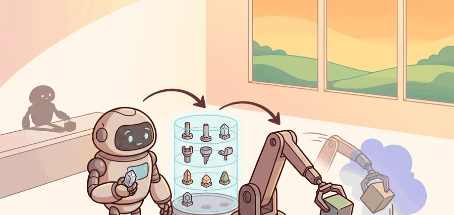
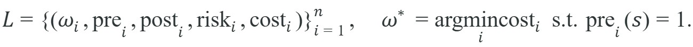
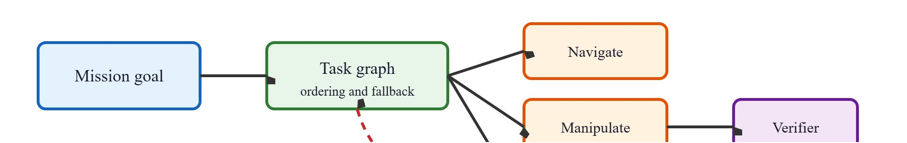

"A skill you can retrieve is worth ten you have to relearn. The library is not overhead; it is the whole point."
A Frugal Planner

This section builds on the option tuple defined in section 26.2 and the skill discovery methods introduced in section 26.3; those two sections supply the formal vocabulary used throughout the library contract here. The terms "precondition" and "postcondition" used from this point on are defined formally in the Formal Contract section below; skim ahead to that definition if a term below feels undefined on first read. The composition problems covered in section 26.5 recur at larger scale in Part VI alongside perception uncertainty (section 30.3) and in Part VII alongside vision-language-action models (section 34.2), where the same precondition-postcondition discipline determines whether a learned policy can slot into a reusable skill slot.
A warehouse robot trained end-to-end on millions of demonstrations can still freeze the moment it encounters a shelf label it has never seen, because it learned pixels-to-torques, not reusable, inspectable actions. Skill libraries change the equation: instead of retraining from scratch for every new task, a robot draws on a catalog of verified controllers, each carrying a precondition, a postcondition, and a recovery plan. As foundation models push embodied agents toward general-purpose deployment in 2025 and beyond, the library is the unit of composition that makes capability transfer safe and auditable. You will build that contract formally, wire it into task graphs, and stress-test it against the failure modes that break naive sequencing.
Hierarchy separates two timescales. An impedance controller runs a 1 kHz torque loop on a Franka arm, while a behavior tree in BehaviorTree.CPP makes a 1 Hz sequencing decision. That split lets the planner pick grasp_upright_object without modeling joint-level contact dynamics, and it lets the low-level policy absorb friction and perception noise without renegotiating the mission. Collapse those two timescales into one monolithic policy and an Open X-Embodiment-trained network can no longer report which subtask failed when a mug slips.
A skill library is an engineering asset: a catalog of reusable controllers, learned policies, task graph nodes, verification tests, and metadata. It lets a drone, autonomous vehicle, or humanoid reuse action knowledge while still respecting embodiment-specific limits. Without a library, adding a tenth task to a warehouse robot may require retraining from scratch on thousands of new demonstrations; with one, the same task composes from existing skills in a single planning pass (in practice, the difference is typically on the order of 40,000 demonstrations to learn a new monolithic policy versus 200 to fine-tune one new skill that slots into an existing library, though the exact ratio depends on task similarity to the existing catalog). This is the reuse dividend of explicit skill contracts, and it compounds with every task added to the library, exactly the pattern the Boston Dynamics Spot example later in this section shows operating in a shipped product. Skill discovery methods can populate this catalog automatically when hand-specification is impractical.
For Skill libraries for embodied agents, treat the skill as an interface: initiation set, internal controller, progress signal, termination rule, verifier, and recovery status must be explicit.
That reuse dividend only holds if every skill in the catalog exposes the same inspectable interface, so the next step is to pin down exactly which fields that interface must carry.
For Skill libraries for embodied agents, use the option tuple as an audit checklist: initiation states, internal policy, termination probability, and verifier must match the robot task.
The equation below states the library contract compactly: the library $\mathcal{L}$ is a set of $n$ skills, each a tuple of an option $\omega_i$, a precondition $\mathrm{pre}_i$, a postcondition $\mathrm{post}_i$, a risk score $\mathrm{risk}_i$, and a cost $\mathrm{cost}_i$; the selected skill $\omega^*$ is the cheapest one whose precondition is satisfied in the current state $s$.

So far: a library is a set of skills, each tagged with an option, a precondition, a postcondition, a risk score, and a cost, and the selector always picks the cheapest one whose precondition currently holds.
For Skill libraries for embodied agents, map the option fields onto behavior trees, task graphs, finite-state machines, or task-and-motion planning nodes so start, act, stop, and verify remain inspectable. Figure 26.5.B shows this layering concretely: a mission goal flows into a task graph, which dispatches to navigate, manipulate, and recover skills, each gated by a shared verifier whose failure signal (dashed red arrow) routes control back to the task graph, which then re-dispatches a recovery skill.

Code Fragment 1 for Skill libraries for embodied agents should expose initiation, progress, termination, verification, and failure reporting before connecting the skill to ROS 2, BehaviorTree.CPP, Drake, or a learned policy.
# Skill library with precondition/postcondition contracts and cost-optimal selection
import numpy as np
from dataclasses import dataclass, field
from typing import Callable, Dict, List, Optional
@dataclass
class Skill:
name: str
precondition: Callable[[Dict], bool]
postcondition: Callable[[Dict], bool]
cost: float # seconds of execution time
risk: float # probability of unsafe outcome in [0, 1]
execute: Callable[[Dict], Dict] # returns updated state
def build_library() -> List[Skill]:
return [
Skill(
name="navigate_to_station",
precondition=lambda s: s["path_clear"] and s["arm_tucked"],
postcondition=lambda s: s["at_station"],
cost=3.6, risk=0.05,
execute=lambda s: {**s, "at_station": True},
),
Skill(
name="grasp_upright_object",
precondition=lambda s: s["at_station"] and s["object_within_reach"],
postcondition=lambda s: s["gripper_loaded"],
cost=2.1, risk=0.12,
execute=lambda s: {**s, "gripper_loaded": True},
),
Skill(
name="change_lane", # high-risk alternative path
precondition=lambda s: s["path_clear"],
postcondition=lambda s: s["at_station"],
cost=1.0, risk=0.45,
execute=lambda s: {**s, "at_station": True},
),
]
def select_skill(state: Dict, library: List[Skill],
risk_budget: float = 0.20) -> Optional[Skill]:
"""Return cheapest feasible skill within the risk budget."""
candidates = [
sk for sk in library
if sk.precondition(state) and sk.risk <= risk_budget
]
return min(candidates, key=lambda sk: sk.cost) if candidates else None
if __name__ == "__main__":
state = {"path_clear": True, "arm_tucked": True,
"at_station": False, "object_within_reach": True,
"gripper_loaded": False}
library = build_library()
chosen = select_skill(state, library, risk_budget=0.20)
print(f"Selected: {chosen.name} cost={chosen.cost}s risk={chosen.risk}")
state = chosen.execute(state)
ok = chosen.postcondition(state)
print(f"Postcondition verified: {ok} state={state}")Selected: navigate_to_station cost=3.6s risk=0.05
Postcondition verified: True state={'path_clear': True, 'arm_tucked': True, 'at_station': True, 'object_within_reach': True, 'gripper_loaded': False}change_lane skill and picks the safety-feasible minimum-cost option, then verifies the postcondition before advancing the state.The expected returned dictionary shows the selector is optimizing inside a safety-feasible subset, not across the whole library. Read the decision as "minimum cost subject to risk budget and satisfied preconditions," which is the right interpretation for hierarchical skill routing.
The risk budget matters because physical robots cannot undo actions. A skill that passes every unit test but ships without a budget is not safe; it is safe-looking, waiting for the wrong state. A 45% failure-probability skill costs a simulated agent one training episode, but it can make a real robot drop a patient, damage a joint, or hit a human. The budget is therefore a hard constraint: any skill whose risk exceeds the threshold is excluded before cost minimization begins, however cheap it is.
The risk score is computed offline from logged execution data: run each skill across a held-out set of initial states, measure the fraction of executions that violate a safety guard (force threshold, workspace limit, or postcondition failure), and store that fraction as the skill's risk field. At runtime the selector reads the precomputed value; no online estimation occurs. This makes selection deterministic and auditable, at the cost of requiring a representative evaluation set for each skill before deployment.
With the contract formalized and the selector implemented, the remaining question is how to author skills so the library stays inspectable as it grows; the following recipe distills that authoring discipline into concrete steps.
navigate_to_station, grasp_handle, dock_drone, or change_lane.When connecting skills in BehaviorTree.CPP, write each skill's postcondition result into a named Blackboard key (BehaviorTree.CPP's shared key-value store that lets sibling nodes pass data to each other without a direct function call) using setOutput, and read the next skill's precondition from that same key using getInput. This forces both skills to agree on coordinate frame and units at the library level rather than relying on each skill to independently re-derive the state. A common gotcha: if the upstream skill writes a pose in map frame but the downstream skill silently assumes base_link frame when reading from the Blackboard, the precondition check passes with a numerically plausible but geometrically wrong value, producing the exact frame-drift failure described in the warning below. Explicitly tagging Blackboard keys with frame identifiers (for example, grasp_target_pose_map rather than grasp_target_pose) makes the mismatch a compile-time or startup error instead of a silent runtime failure.
What happens when two individually correct skills meet at the wrong boundary? The answer is usually not a dramatic crash but a quiet refusal: the second skill's precondition check fails by a margin of centimeters, the planner stalls, and no fault is ever clearly assigned. That boundary problem motivates the following worked example.
Consider a specific case: a mobile manipulator must deliver a mug from a counter to a table 3 meters away. The skill library contains three entries: navigate_to_pose (precondition: path clear, arm tucked; cost: 1.2 s/m), grasp_upright_object (precondition: object detected within 0.4 m, gripper open; cost: 2.1 s), and place_on_surface (precondition: gripper loaded, surface detected within 0.3 m; cost: 1.8 s). The planner selects the minimum-cost sequence that satisfies each precondition in order. That sequence runs navigate (3.6 s), grasp (2.1 s), navigate again (0.6 s), then place (1.8 s). The grasp verifier then reports that the mug tipped 15 degrees beyond the acceptable roll threshold. The skill returns "retry," and the planner re-calls grasp_upright_object from a pose 5 cm to the left, without replanning the entire mission. This is the compounding benefit of explicit postconditions: local recovery without global replan.
The verb-object naming convention (grasp_handle, navigate_to_station) may seem trivial, but it is one of the highest-leverage design decisions in the library. Opaque identifiers such as motion_v2 or controller_final force every downstream engineer to read the implementation before using the skill, undermining the library's core promise of inspectable, reusable contracts.
For Skill libraries for embodied agents, use BehaviorTree.CPP, ROS 2 lifecycle nodes, Drake systems, or task-and-motion planning to handle scheduling and fallback while preserving explicit skill contracts.
For Skill libraries for embodied agents, decompose the household command into navigation, inspection, reachability, grasp, carry, and handoff only if each subskill exposes a verifier and recovery route.
| Field | Question | Example For A Mobile Manipulator |
|---|---|---|
| Initiation | When may it start? | Object detected, arm clear, base within reach. |
| Policy | What controller runs? | Visual servoing plus impedance control. |
| Termination | When does it stop? | Grasp force stable for 0.5 seconds. |
| Verification | How is success proved? | Object pose follows gripper during lift. |
| Recovery | What happens after failure? | Open gripper, re-localize, retry from a safer pose. |
A natural but mistaken assumption is that a skill library works like a software function library: satisfy the precondition and the skill reliably produces the postcondition, just as a pure function returns a deterministic output. That assumption is wrong in embodied AI. Physical execution is stochastic: friction varies, perception is noisy, and actuators drift. A satisfied precondition does not guarantee postcondition success. The correct mental model treats a skill as a probabilistic controller with a contract. The precondition defines the region of state space where the skill has a reasonable chance of succeeding. The postcondition defines what success looks like in sensor space. The verifier and recovery route exist precisely because the skill will sometimes fail even when launched correctly. Engineers who treat skills as deterministic callables omit verifiers and recovery branches, eliminating the library's main safety advantage over a monolithic policy.
Think of chaining skills like passing a baton in a relay race. Each runner (skill) can be perfectly trained in isolation, sprinting flawlessly from start to finish. But if the outgoing runner's outstretched hand and the incoming runner's reaching hand are even slightly out of alignment at the exchange zone, the baton drops regardless of how well either athlete ran their own leg. The exchange point, where one skill's output becomes the next skill's input, is where composition either holds or falls apart. Writing postconditions in the same coordinate frame the next skill reads its precondition from is exactly that baton-passing discipline: it does not matter how fast you ran if the handoff misses.
Composition failures are typically the dominant failure mode in deployed skill libraries in practice, and they are almost never caught by per-skill unit tests. A concrete example: navigate_to_station succeeds and reports the base within 0.05 m of the target, but the target pose was specified in a map frame that drifted 0.12 m during navigation due to wheel slip. grasp_handle then checks its own precondition (object within 0.4 m in the camera frame) and finds the handle at 0.48 m, just outside threshold, so it returns "precondition not met" rather than attempting the grasp. The planner sees two individually-passing skills produce a hard stop with no clear fault owner. The fix is to verify postconditions in the same sensor frame the next skill uses as its precondition, not in the frame the completed skill used internally.
Skill libraries add value when tasks are long-horizon (more than roughly 10 seconds of execution), when sub-tasks recur across missions, and when failure attribution matters for debugging or safety certification. For short, single-phase tasks, the overhead of precondition checking, frame alignment, and postcondition verification can exceed the planning benefit. RT-2 (Brohan et al., 2023) demonstrates that a single visuomotor policy can handle pick-and-place variants without any explicit skill decomposition when the task horizon is under 5 seconds and the scene diversity is covered by the training distribution. The decision criterion is therefore: if the task exceeds one termination condition and one recovery branch, a skill library pays for itself; if it fits in a single option with one verifier, a flat policy is simpler and often more robust.
Foundation-model skill grounding (2024-2026). Vision-language-action models are being repurposed as skill-library backends: rather than hand-authoring preconditions, researchers query a frozen Vision-Language Model (VLM) to score whether a state satisfies a natural-language precondition at runtime. Google DeepMind's GROOT (2024) and the subsequent RoboVLMs survey (Qu et al., 2024, arXiv 2406.09246) show that grounding preconditions in Contrastive Language-Image Pre-training (CLIP)-style embeddings transfers across object categories without per-object retraining, though false-positive rates on occluded states remain above 15% in cluttered scenes.
Skill-conditioned world models for library expansion (2024-2025). Instead of collecting real robot data for every new skill, teams at Berkeley and CMU are using learned video world models to synthesize skill demonstrations. UniSim (Yang et al., 2024) trains a generative action-conditioned video model on internet video and robot logs, then rolls it out to evaluate candidate skill preconditions offline. This cuts the per-skill data cost by roughly 10x on tabletop tasks, though the sim-to-real gap for contact-rich skills (peg insertion, cloth folding) closes only partially without at least a small set of real executions.
Cross-embodiment postcondition verification (2025-2026). The Open X-Embodiment RT-2-X checkpoint (Embodiment Collaboration et al., 2023, extended 2025) pooled 22 robot types, yet postcondition verification remained platform-specific because force thresholds differ by gripper. Current work at Stanford (Mobile ALOHA, 2024) and at ETH Zurich's Robotic Systems Lab (ANYmal-C skill library, 2024) moves verification into RGB-D contact-geometry space so a "grasp succeeded" predicate is embodiment-agnostic. Reliable zero-shot transfer of contact-sensitive postconditions across gripper geometries is still unsolved.
Open problem: embodiment-agnostic recovery policies. Learned recovery policies remain embodiment-specific: when a skill fails mid-execution on a robot the library has not seen, the fallback tree is still human-authored for that actuator envelope. A tractable PhD project is to learn a recovery meta-policy that conditions on the failed skill's postcondition error signal, the robot's URDF (Unified Robot Description Format, the XML file that specifies link lengths, joint limits, and mass properties) kinematic graph, and a small set of real failure trajectories (fewer than 50), and outputs a corrective action sequence that respects the new robot's joint limits and contact stiffness profile. Benchmarking on two or three morphologically distinct arms (Franka, WidowX, xArm) with a shared task suite would let the community measure how much morphological diversity a recovery policy can absorb before it must be retrained.
For Skill libraries for embodied agents, the test is whether initiation set, internal policy, termination rule, verifier, and recovery route can be written for the target robot skill.
Skill libraries for embodied agents is useful when it makes the perception-action loop more reliable, not when it merely adds a more impressive model name.
1. Tabletop skill library in MuJoCo (beginner, weekend). Build a three-skill library (reach, grasp, place) for a simulated Franka arm in MuJoCo using Gymnasium's FetchPickAndPlace-v3 environment (gymnasium-robotics, 2023+), where each skill exposes a precondition lambda, a postcondition verifier, and a retry counter. The key challenge is writing postconditions that check object pose in the same coordinate frame across all three skills so the baton-passing problem from the section does not silently corrupt the sequence.
2. ROS 2 behavior-tree skill router for a mobile manipulator (intermediate, 1-2 weeks). Implement the skill library contract from Code Fragment 26.5.1 as a set of ROS 2 lifecycle nodes wired into a BehaviorTree.CPP tree, then deploy it on a simulated TurtleBot3 with a WidowX arm in Gazebo or Isaac Lab, routing navigation and grasp skills via typed Blackboard keys tagged with coordinate frame identifiers. The key challenge is catching frame drift at the skill boundary at startup rather than as a silent runtime failure, by validating that every upstream setOutput key and downstream getInput key share an explicit frame suffix before the mission begins.
Design a method-matched experiment for Skill libraries for embodied agents. Specify the environment, observation schema, action interface, metric, and one perturbation that targets the section's core assumption.
Trace through select_skill from Code Fragment 26.5.1 with a tiny example. State: path_clear=True, arm_tucked=True, at_station=False, object_within_reach=True, gripper_loaded=False; risk budget = 0.20.
Step 1, gather candidates (precondition satisfied AND risk ≤ 0.20):
navigate_to_station: precondition needs path_clear (True) and arm_tucked (True) -> pre = 1; risk = 0.05 ≤ 0.20 -> KEEP.grasp_upright_object: precondition needs at_station (False) -> pre = 0 -> DROP (not at station yet).change_lane: precondition needs path_clear (True) -> pre = 1; but risk = 0.45 > 0.20 -> DROP (over budget).Step 2, candidate set = {navigate_to_station}. Only one feasible skill survives.
Step 3, argmin over cost: min over {3.6} -> navigate_to_station (cost = 3.6 s).
Step 4, execute and verify: execute sets at_station=True; the postcondition checks at_station -> True. The selector deliberately ignored the cheaper 1.0 s change_lane because its 0.45 risk blows the 0.20 budget: the safety constraint is applied before cost minimization, not after.
Boston Dynamics ships Spot with a skill library of named, contract-bearing "Autonomy Actions" (open door, read gauge, climb stairs, dock), each with an explicit precondition check and a recovery branch, sequenced by a mission graph the operator authors in Orbit (formerly Scout). When a gauge-reading action fails its postcondition (the camera cannot resolve the dial), the mission graph reroutes to a re-approach action rather than aborting the whole inspection, exactly the local-recovery-without-global-replan pattern the section describes.
The "skill as a contract with a precondition and an effect" idea did not start in robotics: it is the STRIPS operator (a formal action description made of a precondition list and an add and delete effect list, where STRIPS stands for Stanford Research Institute Problem Solver) from Fikes and Nilsson's 1971 planner built for Shakey, the first mobile robot to reason about its own actions. Shakey's operators carried preconditions and add/delete effect lists, the direct ancestors of today's precondition and postcondition fields. The surprising twist is that modern vision-language-action systems are now circling back to that 1971 structure, querying a frozen VLM to decide whether a natural-language precondition holds, so the field spent five decades learning policies end-to-end only to rediscover that the inspectable contract Shakey shipped with was the reusable unit all along.
Goal. Empirically show why the risk budget is a hard constraint and not a soft cost penalty, by comparing two selectors over many randomized states.
Tools. Python 3 with NumPy only; copy Code Fragment 26.5.1 into a file as your starting point. No robot or GPU needed (about 15 to 20 minutes).
Procedure. Write a second selector, select_skill_weighted, that ignores the hard budget and instead minimizes cost + lambda * risk for a tunable lambda. Generate 1000 random states (randomize the boolean flags), and for each state run both the budget selector and the weighted selector, then "execute" the chosen skill stochastically: draw a Bernoulli sample (a single weighted coin flip that lands "unsafe" with the given probability and "safe" otherwise) with probability equal to the skill's risk and count it as an unsafe outcome when it fires.
What to vary. Sweep lambda across {0, 2, 5, 10, 20} for the weighted selector, and sweep the budget across {0.10, 0.20, 0.40} for the hard-constraint selector.
What to observe. Plot the unsafe-outcome rate against the mean cost for both selectors. You should see the weighted selector trade safety for cost continuously (small lambda picks the cheap 0.45-risk change_lane often), while the hard-budget selector clamps unsafe outcomes below the budget regardless of how cheap the risky skill is. The takeaway: a soft penalty lets a sufficiently large cost gap buy its way past safety, which is exactly what you cannot allow on a physical robot.
This section grounded skill libraries for embodied agents in an explicit robot-data contract: observations, actions, demonstrations, evaluation splits, and failure labels. The next reading step is Part VI: Embodied Perception, where the same contract is carried into the next technique or chapter.
Eysenbach, B. et al. (2018). Diversity is All You Need: Learning Skills Without a Reward Function.
DIAYN studies unsupervised skill discovery by maximizing distinguishable behaviors. It is useful for understanding when skills can be learned before a downstream task is specified.
Bacon, P. L., Harb, J., and Precup, D. (2017). The Option-Critic Architecture.
Option-Critic learns options end to end within reinforcement learning. It helps readers compare hand-specified skills with learned temporal abstractions.
This paper formalizes options as temporally extended actions with initiation, policy, and termination conditions. It is the canonical reference for the chapter's skill hierarchy vocabulary.
Open X-Embodiment and RT-X Project Website.
Cross-embodiment datasets make skill reuse a practical question rather than only a theory topic. The project helps readers connect hierarchy to robot foundation models and shared behavior repertoires.
BehaviorTree.CPP Documentation.
Behavior trees are a production-friendly way to compose skills with fallback and monitoring logic. They complement learned policies by making high-level task decomposition explicit and inspectable.